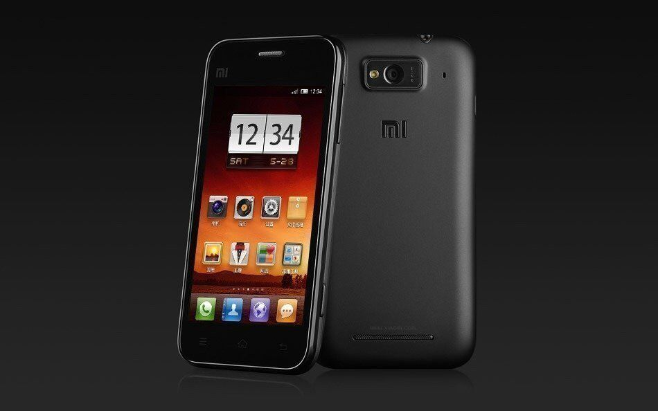

Xiaomi Mi 1
Xiaomi Mi 1 — первый смартфон компании Xiaomi на операционной системе Android 2.3.6 MIUI, анонсированный 18 августа 2011 года. Также известен как Xiaomi Phone. Из ряда особенностей можно отметить двухъядерный процессор с тактовой частотой 1,5 ГГц (что для того времени было достаточно); аккумулятор ёмкостью 1930 мА·ч; трансфлективный ЖК-дисплей от Sharp, сохраняющий достаточно высокое качество изображения даже при ярком солнечном свете, учёт 3G-трафика, двойной системный раздел, позволяющий устанавливать две версии прошивки: свежую и зарекомендовавшую себя стабильную (если с новой возникнут проблемы, это не помешает полноценной работе устройства).
Самым главным преимуществом этого смартфона была его относительная дешевизна, достигнутая за счёт экономии сопутствующих расходов, таких как: реклама, продажа в оффлайне и даже экономия на материалах упаковки.
Устройство оборудовано 8-мегапиксельной камерой, способной записывать видео с разрешением 836p/60 fps, установлен видеоускоритель Adreno 220 и процессор Snapdragon S3 MSM8260.
Сочетание высоких характеристик, доступной цены и хорошо спланированной предпродажной рекламной кампании привело, согласно микроблогу компании, к высоким объёмам продаж уже на первых этапах реализации.